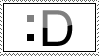
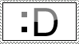
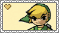
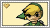

Buggers: Too Many Too Swat was developed in Godot for the Georgia 48h Summer Game Jam. It's a simple arcade-style game where you protect your fruit from various different types of bugs who attempt to steal it and take if off of the screen. Buggers ended up winning the jam, voted as the best overall game!
I contribued to the design, programming, vfx, sound design, and some mild spritework.
Womburger 2 is a simple top-down shooter developed in Java with Greenfoot. It's essentially a test of what I could do in Greenfoot, which is basically a super limited environment primarily used for teaching beginners Java, I just so happened to fall in love with how scuffed it was and I wanted to keep working with it for the fun of it. The original Womburger was also developed this way and for this reason, but I do not have it published.
Development on it is currently paused but I really do want to go back and finish it at some point! I loved working on it so much and I never got around to adding sfx or fully implementing the item/shop system (you can see remants of the shop system still in the game, right now it's just a free round).
You can play Womburger here on jofish.net!
SteamKitty is a Simple Python3 Program that can be used to trick Steam into letting you use Remote Play as a Remote Desktop tool into your Windows machine
Catdra is a program written in Java that, frankly, was meant to be VERY annoying and have zero purpose besides getting some practice in. It's a cat hydra, so when you close one window, two more open. It also tries very hard to make itself hard to terminate. Just made it for fun a while ago.
 



 
